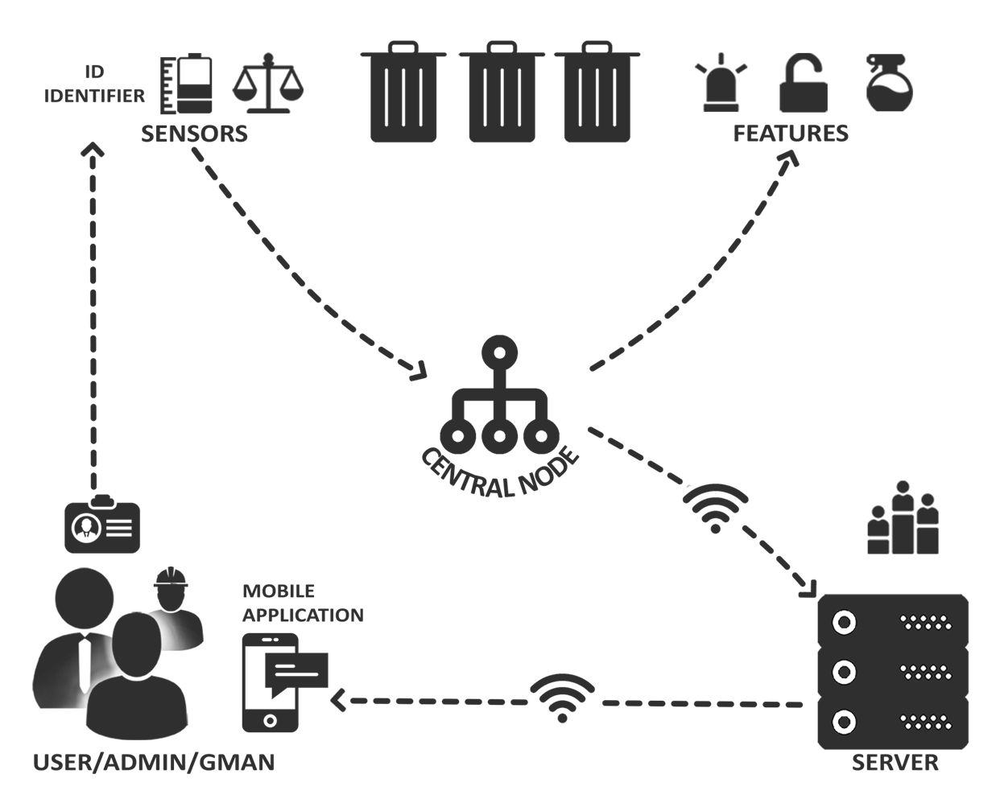

Hardware Architecture
Computational Nodes:
- Central computational node: data elaboration point.
It communicates with sensors and controls actuators through wires. Upddates data inside the central server thanks to an internet connection, wifi or Ethernet. This is set near the bin area.
- Server:(Centralized computational node): data storage and data elaboration point
- Mobile Device (Smartphone/Tablet): will retrieve data from the server through an internet connection, and show them to the User using our App. It will also show Notifications, because a requested bin from the user has just been discharged.
Sensors:
- Weight Sensors: placed on the bottom of bins.
They are used to calculate points in the challenge.
- Proximity Sensors(UltraSounds): placed just below the cap, inside the bins.
They will check if the bin is almost full, to activate lock.
- NFC Sensor(Receiver): placed inside the bin area.
This will recognize(by badge detection) a user, a Gman, or an Admin, to open available bins.
Actuators:
- Led Lights(red and green): placed on the cap of each bin.
They will display the actual state of a bin to the User. Red if full(not available) and green if available.
- [Ad Hoc] Locker Systems: placed on the cap of each bin.
This will activate to unlock a bin only if it is available and a User is accessing the area. Otherwise it will keep bins locked.
- [Ad Hoc] Spray Vaporizators: placed under the cap of each bin.
If a Gman has completed the collection of a bin, this system will igienize the air and will provide some good scent.
User interface devices:
- Personal Identification Badge for the User:
a key chain with NFC (or Bluetooth) technology inside.
- Our mobile Android App: users will acceed to different features after the log in.
Admin, Garbage Collector and Users will have three different set of features available.
Software Architecture
Mobile Application:
Functionalities:
- User Identification via Log In
- Shows Charts from the Challenge, to Users
- Shows for each bin, what is the actual level of free space, to Users
- Shows hints about recycling, to Users
- Shows Scheduled Collection of the Bins, to Users
- Allows to add and to remove Users, to Admin
- Shows Notifications about bins which have reached status of Not Available, or if they are full, to Gman
- After showing Notification about fullfilled(not available) bins, allows to set a date for next collection, to GMAN.
Runs On:
A Server Machine
Interacts With:
A Server Machine
- The Actuators files
- The Sensors files
- The Server
Hardware Components
- Android Mobile device, since Android v.5.0
- Leds(green and red); [Ad Hoc] Spray System; [Ad Hoc] Locking System;
- NFC personal Identifier(for Keychain);
- Weight Sensors; NFC receiver; Proximity Sensors(technology of Ultrasounds);
- Raspberry Pi 3;
- Server Machine to run a DBMS;
Software Components
- Android Mobile App;
- Android APIs for level 22;
- Sensors and Actuators APIs;
- Central Node Software;
- Server Hosting Service;
- Python 3.5.2;
-
- Flask/PHP?;
- MySQL;